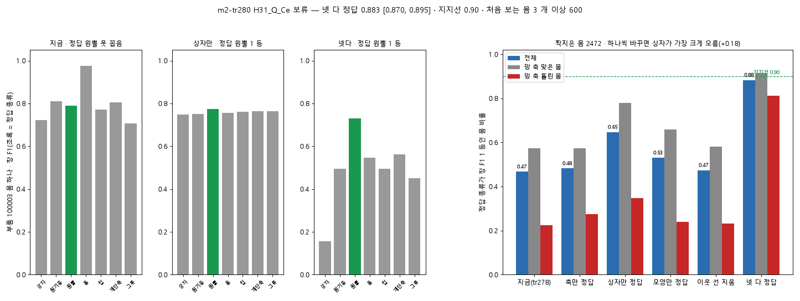

실험 m2_tr0280_h031_원인가르기
목표 G1.2 view 모음 → 파츠별 CAD code(CadQuery · 그 전 「3 면도 → 파츠별 CAD」 · 지금 M2 는 위 · 앞 · 옆 고정 세 장만 받음 → 아무 각도 N 장으로 바꿀 것 · 11-20) · G1 첫 제품 — 피규어 · 메카 사진 여러 장 + 치수 → 숨은선 3 면도 + 파츠별 CAD · G0 임의의 이미지 → CAD 코드 · 빌린 가정 3: 생성기기하 · 정답3D · 정사영 · 갚는 계획: 진단 · 정답 축 · 상자 · 메시 · 묶음을 줌 · 몸 3 개 이상 600(tr277 · 278 과 같음) · 옛 생성기 고정(커밋 3519cfe9 · 망이 본 그림과 같은 길) — 가장 크게 오르는 칸부터 그 칸을 망 없이 구하는 고침(Fi) → 흐린 view · m1 view 로 버팀(Sc) · 목표 시험지 값: 안 잼 (!)
tr278 에서 다시 그림 창 점수가 정답 종류를 1 등으로 꼽은 몸이 반뿐이었던 것은 축 · 상자 · 모양 · 이웃 선 네 칸 때문인가?
판정 · H31 보류(넷 다 정답 0.883 [0.870, 0.895] · 지지선 0.90 에 0.017 모자람) — 원인 가르기: 상자가 가장 큰 칸(+0.18 · 정답 상자 15 % 옮김에 자가 0.98 → 0.16 으로 무너지는 것과 같은 방향) · 모양 +0.06 · 축 혼자 +0.015(축 틀린 몸은 상자 · 모양과 함께라야 0.81) · 이웃 선 0 · 다음: 상자를 망 없이 구하기(공유 축 구간 — 왕복 시험에서 구간 숫자로 다시 그림 0.998) + 축 세 개 다 넣어 보기를 붙인 고치기
| 가설 | 주장 | 결과 | 근거 |
|---|---|---|---|
| H31 | 축 · 상자 · 모양 · 이웃 선 네 칸을 다 정답으로 주면 창 점수가 정답 종류를 1 등으로 꼽는다 | 보류 | 지금 0.467(tr278 0.50 과 ±0.05 안) · 축만 0.482(+0.015 [0.006, 0.025]) · 상자만 0.647(+0.180 [0.162, 0.198]) · 모양만 0.530(+0.063 [0.051, 0.077]) · 이웃지움 0.474(+0.007 [-0.006, 0.020]) · 넷다 0.883(+0.416 [0.396, 0.436]) · 망 축 틀린 몸 760: 지금 0.225 · 축만 0.274 · 상자만 0.347 · 넷다 0.811 · 맞은 몸 1,712: 0.574 · 상자만 0.780 · 넷다 0.915 · 다시 지은 그림 대 저장 입력 F1 중앙값 1.0 · 오류 0 |
분석
한 줄로
물음: tr278 에서 다시 그림 창 점수가 정답 종류를 1 등으로 꼽은 몸이 반뿐이었던 것은 축 · 상자 · 모양 · 이웃 선 네 칸 때문인가?
답: 대부분 그렇다 — 판정은 보류. 넷을 다 정답으로 주면 0.47 → 0.88([0.870, 0.895] · 지지선 0.90 에 조금 모자람). 하나씩 주면 상자가 가장 크다(+0.18). 모양 +0.06, 축 혼자 +0.015, 이웃 선은 0 이다.
왜 이 실험을 했나
tr278 에서 다시 그림으로 종류를 고치자 오히려 나빠졌다. 문제는 점수가 정답 종류를 반만 1 등으로 꼽는 것이었고, 원인은 후보 넷만 있었다. 축이 틀린 몸에서 더 망가졌지만 그 몸들은 망 종류부터 덜 맞던 몸이라 축 탓인지 가를 수 없었다. 사용자가 「원인 파악까지는 한 거야?」 라고 물었고, 아니어서 이 실험을 했다. 우리 목표는 그림 → CAD 코드이고, 지금 병목은 몸 나누기다.
바꾼 것 하나
몸마다 7 종류 창 점수를 매길 때 한 칸씩만 정답으로 바꾼다. 팔은 여섯이다 — 지금(tr278 그대로) · 축만 · 상자만 · 모양만 · 이웃 선 지움 · 넷 다. 나머지는 tr278 과 같다(같은 600 부품 · 다른 몸은 망 몸 그대로). 입력은 망이 실제로 본 저장 그림이고, 생성기는 f7 이 고치기 전 코드(커밋 3519cfe9)로 고정했다.
결과

| 넷 다 정답 | 지금(tr278) | 목표 | 넘었나 | |
|---|---|---|---|---|
| 정답 종류 1 등 비율(짝지은 몸 2,472) | 0.883 [0.870, 0.895] | 0.467 | ≥ 0.90 · 아래 ≥ 0.85 | 아니오(보류) |
「정답 종류 1 등 비율」은 몸 자리에 7 종류를 하나씩 넣어 다시 그렸을 때, 그 몸 근처에서 입력과 가장 같은 종류가 정답인 몸의 비율이다. 무작위면 0.14, 이웃까지 다 정답이면 0.98 이다(자 검사).
왜 이렇게 나왔나
확인한 것
- 하나씩 바꾸면 상자가 가장 크다: 0.467 → 0.647(+0.18 [0.16, 0.20]). 자 검사에서도 정답 상자를 가장 긴 변의 15 % 만 옮기면 0.98 → 0.16 으로 무너졌다 — 이 점수는 상자 자리에 아주 예민하다.
- 축은 혼자서는 거의 안 오른다(+0.015). 축이 틀린 몸 760 개도 축만 고치면 0.23 → 0.27 이다. 내가 tr278 에서 짐작한 「축 탓」은 혼자서는 맞지 않았다.
- 그런데 축이 틀린 몸도 넷을 다 주면 0.81 이다. 하나씩 오름을 더하면 0.27 인데 넷 다는 0.42 — 칸끼리 섞여 작용한다.
- 이웃 선을 지워도 오르지 않는다(+0.007 · 구간이 0 을 걸침).
짐작 (아직 확인 안 함)
- 상자가 맞아야 축과 모양의 차이가 점수에 보인다(섞여 작용하는 까닭).
- 넷 다에서 남은 0.12 는 다른 몸이 망 몸 그대로라 가림 · 이웃이 정답과 다른 몫이다.
한계
- 모양 정답은 정답 종류 후보에만 줄 수 있다(다른 종류엔 「정답 모양」 이 없음) — 천장으로만 읽는다.
- 600 부분집합 · 한 번만 돌림 · 상자 + 축처럼 둘씩 묶은 팔은 안 쟀다.
- 이웃 선 지움은 거의 가려진 몸에서 입력이 비어 점수가 0 근처로 몰린다.
배운 것과 다음
다시 그림 점수를 망친 첫 원인은 상자다 — 망 · 실루엣 맞춤 상자가 조금만 어긋나도 점수가 종류를 못 본다.
- 상자를 망 없이 구한다: 공유 축 구간(왕복 시험에서 구간 숫자로 다시 그리면 0.998) — 망 몸 근처 선의 구간으로 상자를 다시 잡고 1 등 비율이 상자만 정답(0.65)에 얼마나 가는지.
- 상자를 잡은 뒤 축 세 개를 다 넣어 보기 · 종류마다 속 숫자 맞추기를 차례로 붙인다(둘씩 묶은 팔로 섞임도 잰다).
실험 기록
- 카드(돌리기 전 커밋 b89bc132 · H31_Q_Ce · 식 · 판정식) · 원인280.py(시험 · 자검사 · 흐름 · 재기 · 결과그림) · 번호는 m2 담당 f7 세션이 잡아 줌.
- 처음 시험에서 옛 생성기 고정이 안 먹힌 것을 잡음 — 뒤에 부르는 고치기 · 왕복이 자기 폴더를 경로 맨 앞에 다시 넣어 새 코드가 먼저 잡혔다. 옛 모듈을 먼저 불러 고정한 뒤 다시 지은 그림 = 저장 입력(F1 중앙값 1.0).
- 자 검사 「정답종류1등」 새로 통과(오라클 0.979 · 정답 상자 15 % 옮김 0.157 · 무작위 0.18 · 40 부품 172 몸).
- 지금 팔 0.467 은 tr278 의 0.50 과 다르다 — tr278 은 큰 몸부터 고친 뒤 셌고, 여기는 매번 같은 바탕에서 셌다(±0.05 안).